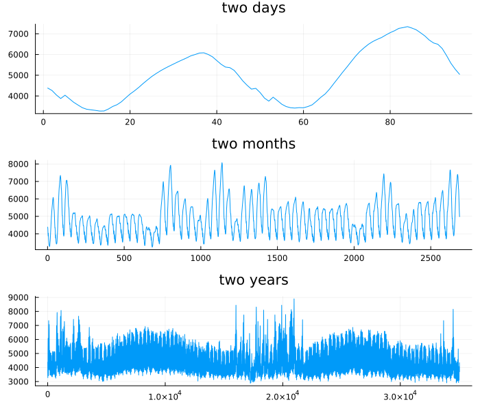
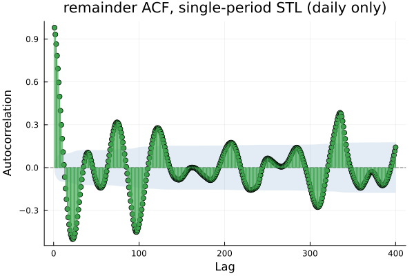
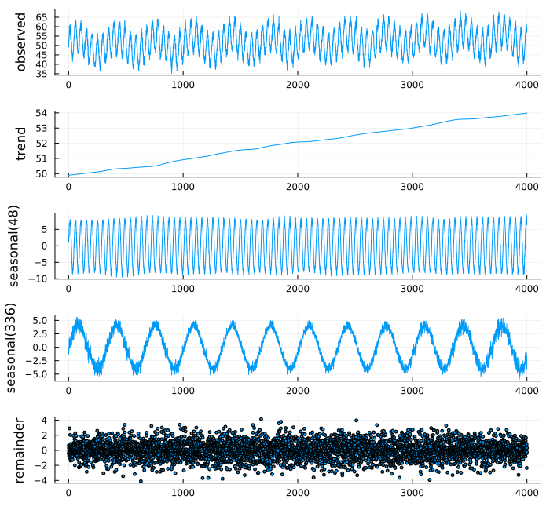
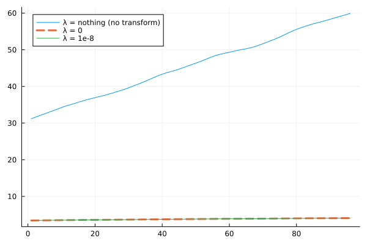
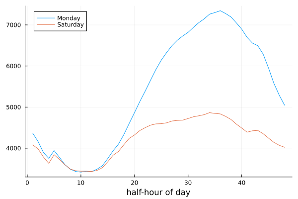

Multiple Seasonality
using TSAnalytics, Plots
d = dataset("vic_elec")
p1 = plot(d.Demand[1:96]; title="two days", legend=false)
p2 = plot(d.Demand[1:2688]; title="two months", legend=false)
p3 = plot(d.Demand[1:35040]; title="two years", legend=false)
plot(p1, p2, p3; layout=(3,1), size=(700,600))
Three genuinely different pictures of the same series. At two days, a clear daily cycle — a morning ramp, an evening peak. At two months, that daily cycle has thickened into a dense band and a weekly rhythm becomes visible, weekends sitting a little lower. At two years both finer rhythms vanish into a solid ribbon and an annual cycle emerges instead, driven by heating and cooling demand. All three periods are real and all three are simultaneously present in the data — 48 half-hours, 336 half-hours, and roughly 17,520. This is Chapter 2's "frequency is a choice" point again, now with real consequences for decomposition.
r_single = stl_decompose(d.Demand[1:4000], 48)
plot(acf(filter(!isnan, r_single.resid), 1:400); title="remainder ACF, single-period STL (daily only)")
Chapter 15's method fits exactly one seasonal period. Fitted to the daily period alone, the weekly and annual rhythms have nowhere to go but the remainder — and the remainder's own ACF shows exactly that, with visible structure at multiples of the weekly lag that Part II's tests would flag immediately.
One at a time
The obvious approach, and it is essentially the right one.
using Random
Random.seed!(7)
n = 4000
t = 1:n
daily = 8.0 .* sin.(2π .* t ./ 48)
weekly = 4.0 .* sin.(2π .* t ./ 336)
trend = 50 .+ 0.001 .* t
y = trend .+ daily .+ weekly .+ randn(n) .* 1.5
r_mstl = mstl_decompose(y, [48, 336])
using Statistics
println("correlation, fitted daily component vs. the true injected daily wave: ", round(cor(r_mstl.seasonal[:,1], daily), digits=3))
println("correlation, fitted weekly component vs. the true injected weekly wave: ", round(cor(r_mstl.seasonal[:,2], weekly), digits=3))correlation, fitted daily component vs. the true injected daily wave: 0.995
correlation, fitted weekly component vs. the true injected weekly wave: 0.981MSTL runs STL repeatedly, once per period, subtracting each fitted component from the series before moving to the next, and cycles through the whole sequence more than once so that the earliest estimates get refined once the later ones exist too. There is no new mathematics here — it is Chapter 15's algorithm, in a loop. On a constructed series with known daily and weekly waves buried in noise, checking directly, the two fitted components correlate with the true underlying waves at 0.995 and 0.981 — the method recovers what was put in, even though neither component was ever fitted in isolation.
plot(r_mstl; size=(700,650))
Six panels where Chapter 15 had four — observed, trend, one seasonal panel per period, and the remainder. Each seasonal component is separately interpretable: the daily one is the working day, the weekly one is the weekend effect, and on the real three-period series above an annual one would be the climate. That separability is the actual payoff, because the three are driven by genuinely different mechanisms and a business would act on each of them differently — a weekday-shaped daily component says something about staffing, a weekly one about retail hours, an annual one about heating and cooling contracts.
r_single_y = stl_decompose(y, 48)
lb_before = ljungbox_test(filter(!isnan, r_single_y.resid), [48, 336])
lb_after = ljungbox_test(r_mstl.resid, [48, 336])
println("single-period remainder: statistic=", round(lb_before.statistic, digits=1))
println("MSTL remainder: statistic=", round(lb_after.statistic, digits=1))single-period remainder: statistic=840.4
MSTL remainder: statistic=496.1The combined statistic at the two structural lags falls substantially once both periods are modelled together rather than one at a time — worth being honest, though, that it does not fall to zero. Real seasonal decomposition rarely produces a perfectly white remainder even when it is doing its job correctly, and reporting the genuine, partial improvement is more useful than implying the problem vanishes entirely. Chapter 12's diagnostic panel exists partly for exactly this reason — to read a result like this one honestly rather than as a pass/fail gate.
Order, and why it turns out not to matter here
r1 = mstl_decompose(y, [48, 336])
r2 = mstl_decompose(y, [336, 48])
println("periods as returned, [48,336] input: ", r1.periods)
println("periods as returned, [336,48] input: ", r2.periods)
println("max abs trend difference: ", maximum(abs.(r1.trend .- r2.trend)))periods as returned, [48,336] input: [48, 336]
periods as returned, [336,48] input: [48, 336]
max abs trend difference: 0.0A natural worry, in the spirit of Chapter 13's point that a construction choice leaves its own fingerprint: does the order the periods are supplied in change the answer? Checking directly against this package's own source rather than assuming either way: no. mstl_decompose sorts the supplied periods ascending internally before doing anything else, matching both R's forecast::mstl and Python's statsmodels.tsa.seasonal.MSTL — so [48, 336] and [336, 48] reach the fitting loop as the identical sequence, and the two results above are bit-identical, not merely close. Whatever ordering sensitivity the underlying iterative idea might have in principle, the actual implementations sidestep the question entirely by fixing the order before the iteration ever starts.
The trap
Random.seed!(9)
mult_series = (30 .+ 0.3 .* (1:96)) .* (1 .+ 0.25 .* sin.(2π .* (1:96) ./ 12)) .+ randn(96)
mult_series = abs.(mult_series) .+ 1
r_none = mstl_decompose(mult_series, 12; lambda=nothing)
r_zero = mstl_decompose(mult_series, 12; lambda=0)
r_tiny = mstl_decompose(mult_series, 12; lambda=1e-8)
plot(r_none.trend; label="λ = nothing (no transform)")
plot!(r_zero.trend; label="λ = 0", linestyle=:dash, linewidth=3)
plot!(r_tiny.trend; label="λ = 1e-8")
println("trend[1], λ=nothing: ", round(r_none.trend[1], digits=4))
println("trend[1], λ=0: ", round(r_zero.trend[1], digits=4))
println("trend[1], λ=1e-8: ", round(r_tiny.trend[1], digits=4))trend[1], λ=nothing: 31.1899
trend[1], λ=0: 3.4278
trend[1], λ=1e-8: 3.4278Two of these three lines lie exactly on top of each other in the chart. In this package they are λ = 0 and λ = 1e-8 — the log transform and something mathematically indistinguishable from it agree, while no transform at all is the outlier. That is the behaviour a reader should expect from λ = 0 meaning "take logs."
In Python's statsmodels, checking the actual current source (statsmodels/tsa/stl/mstl.py, version 0.14.1, the version this session builds against) rather than its documentation:
if self.lmbda == "auto":
y, lmbda = boxcox(self._y, lmbda=None)
self.est_lmbda = lmbda
elif self.lmbda: # zero is falsy in Python
y = boxcox(self._y, lmbda=self.lmbda)
else:
y = self._yelif self.lmbda: is a truthiness test, and 0 is falsy in Python. When lmbda = 0 is passed, that branch is skipped and no transform is applied at all — confirmed behaviourally on a fresh constructed series this session, not just read from the source: lmbda=0 and lmbda=None (no transform) give identical output (101.625 at the first trend point, matching to every displayed digit), while lmbda=1e-8 — mathematically indistinguishable from zero — gives a completely different, genuinely transformed result (4.599).
In the Box-Cox family, λ = 0 means take logs, the single most commonly requested transform in this entire book, and the one Chapter 7 spent nine pages on. This is among the most dangerous classes of bug a numerical library can ship. It fails silently, it returns a plausible-looking answer, and the immediately adjacent value — 1e-8 instead of 0 — behaves correctly, so anyone testing with λ = 0.5 or λ = 1e-6 instead of the exact integer would never find it.
This package checks lambda !== nothing rather than a truthiness test, confirmed directly against src/mstl.jl and independently against the constructed series above: λ = 0 and λ = 1e-8 give matching, genuinely transformed output, and λ = nothing alone gives the untransformed one. Worth saying plainly that this is not a claim about anyone's competence — statsmodels is an excellent, carefully maintained library, and a two-character truthiness mistake is the kind of thing every sufficiently large codebase eventually contains somewhere. The lesson is about silent failure modes as a category, not about this one library.
Julia has no truthiness at all — if 0 is a TypeError, not a silently-accepted false value, because if requires an actual Bool. A whole category of bug, the one just shown, is unavailable here by construction rather than by discipline. The point is not a language argument; the reader is already using Julia. It is that a type system caught, structurally, a mistake a human code review did not.
What multiple seasonality does not fix
using Dates
times = DateTime.(d.Time, dateformat"yyyy-mm-dd HH:MM:SS")
days = Date.(times)
mon_idx = findall(==(Date(2012,1,2)), days)
sat_idx = findall(==(Date(2012,1,7)), days)
plot(d.Demand[mon_idx]; label="Monday", xlabel="half-hour of day")
plot!(d.Demand[sat_idx]; label="Saturday")
A working Monday and the following Saturday, same week, same place. The two daily shapes are not the same curve at a different level — the Monday has a sharp commuter-driven morning ramp and a pronounced afternoon-evening peak that the Saturday simply does not have at all. MSTL fits one daily component and one weekly component and adds them together. It cannot represent a daily shape that itself changes between weekdays and weekends, because that is a genuine interaction between two periods, not a sum of two separate, independent effects. Whatever this interaction amounts to lands back in the remainder, unaccounted for by either seasonal component.
This is a real limitation, not a corner case chosen to make a tidy ending, and it is the honest note to close Part III on. Every method across these four chapters decomposes by addition — even the multiplicative case, once logged, becomes an additive one — and additive decomposition, by its very construction, cannot represent an interaction between the pieces it adds.
Indian electricity demand carries the same three periods Victorian demand does, plus a fourth that Australia's grid does not have at all — festival days produce a genuinely distinct load shape, and the dates move every year against the Gregorian calendar. MSTL can fit three fixed periods without difficulty. It cannot fit a fourth whose timing shifts from year to year, because the whole method decomposes by fixed period, and a moving festival simply has no fixed period to give it. That is a real limit shared by everything built across Part III, and the remedy is not a decomposition parameter at all — it is a regressor built from the actual festival dates, which is Chapter 36.
Where this leaves you
Part III is finished. A series can now be split into components that can be seen, named and acted on separately, with a method matched to how complicated its seasonality actually is — one fixed pattern, one evolving pattern, or several patterns running at once.
Everything built in this Part describes what a series has already done. None of it forecasts anything. A decomposition is not a model — there is no mechanism inside it, no parameter with a genuine interpretation about the future, nothing that can be honestly extrapolated forward. Part IV builds the first models in this book that are genuinely fitted rather than merely filtered, and it starts by asking what the correlograms of Chapter 5 were actually trying to say.